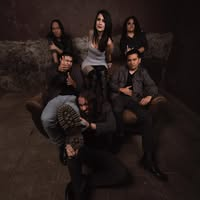

"Buscaré" nace del amor más fuerte que existe: el amor de una madre que se niega a dejar de buscar a su hija o a su hijo, pase lo que pase. Con este mensaje desgarrador, la banda mexicana SHE NO MORE rinde un poderoso homenaje a las mujeres que cavan la tierra de este país con sus propias manos.
Frente a la cifra brutal de más de 133,000 vidas arrancadas en México, y ante la indiferencia gubernamental y social, la banda de metal sinfónico decide convertir el dolor en ruido. Mariana Cassaigne, vocalista de la banda, lo deja claro: “No son las autoridades las que buscan y encuentran, son las madres. Recorren cerros, desiertos y terrenos abandonados. Buscan con la esperanza de hallar vida, aunque con frecuencia solo encuentran restos".

El tema está profundamente inspirado en el caso de Jaqueline Palmeros, quien fundó un colectivo tras la desaparición de su hija Monserrat en 2021, logrando encontrar sus restos en una de sus propias brigadas. Desde hace tres años, SHE NO MORE ha acompañado al colectivo "Una Luz en el Camino", forjando un vínculo real con esta lucha.
Para magnificar el impacto sonoro y emocional, la banda sumó al coro de cantautoras El Palomar, encarnando las voces de aquellas que siguen gritando nombres al viento. A nivel técnico, el track alcanza dimensiones épicas al ser mezclado y masterizado por el legendario productor francés Brett Caldas-Lima en Tower Studio.